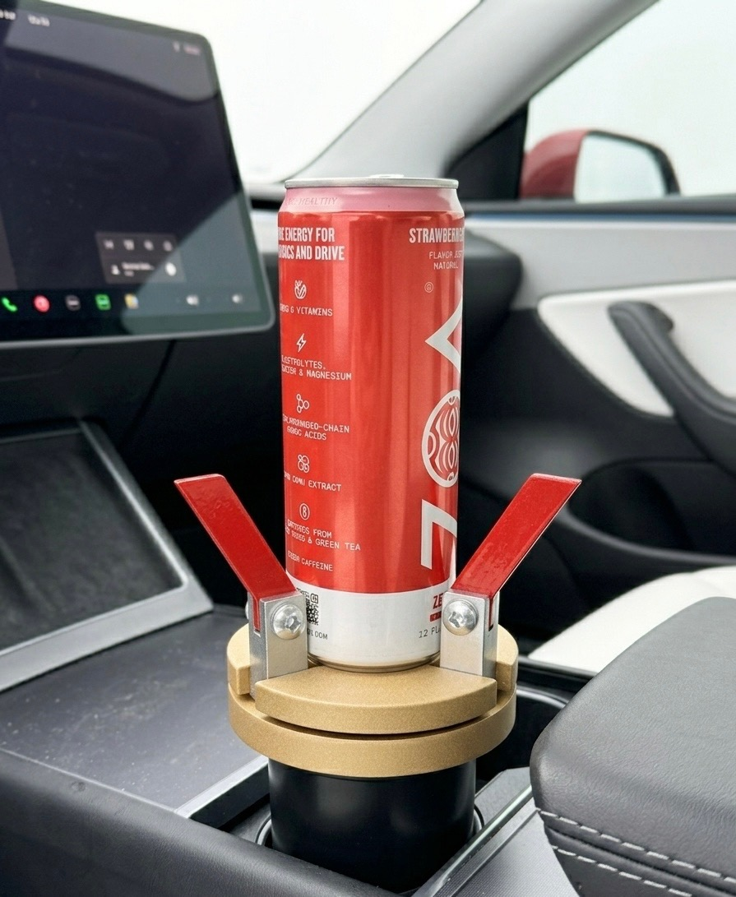
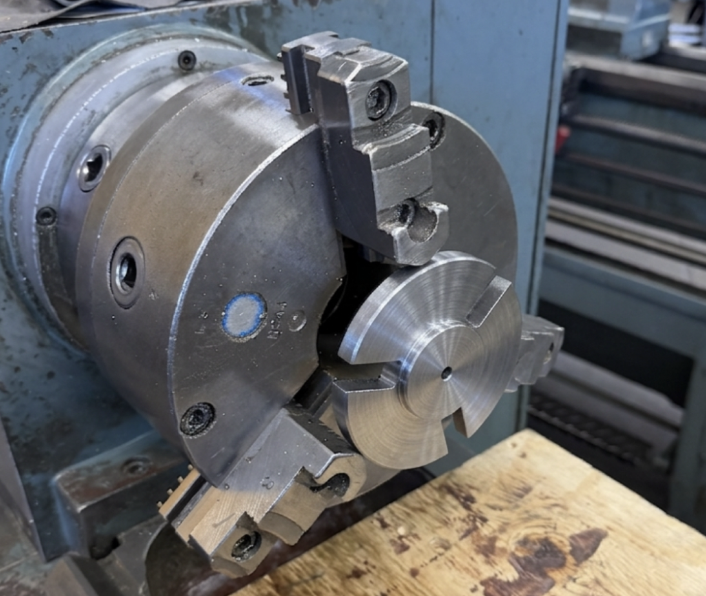
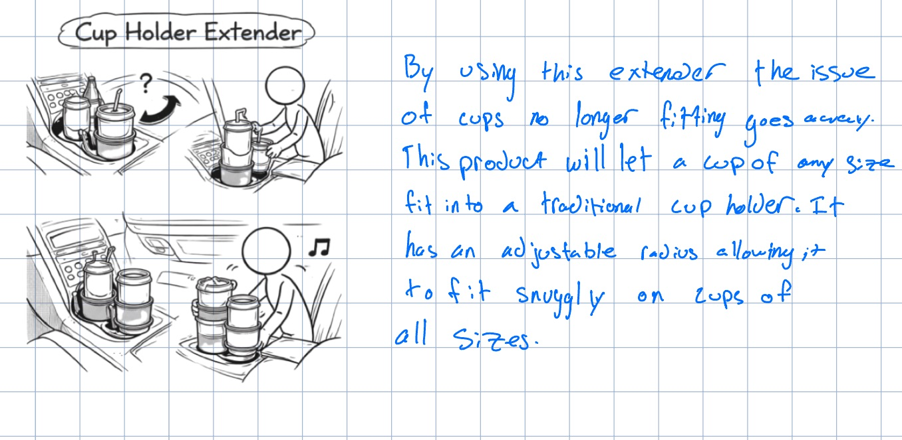
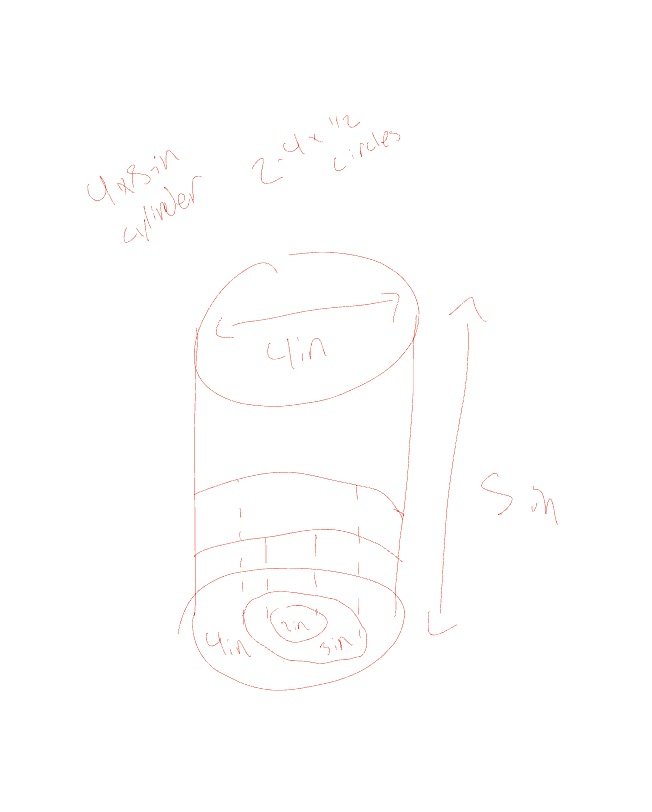
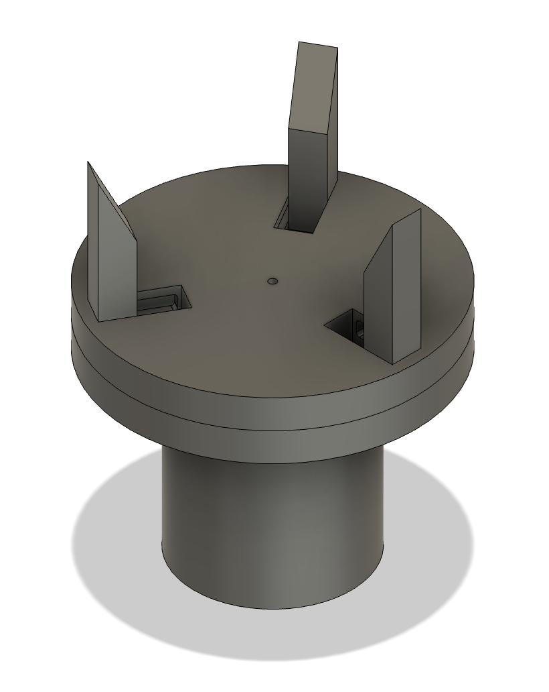
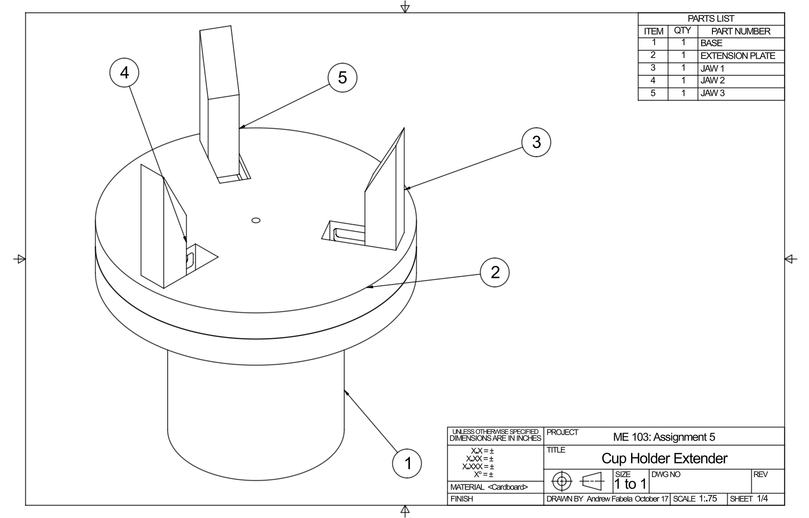
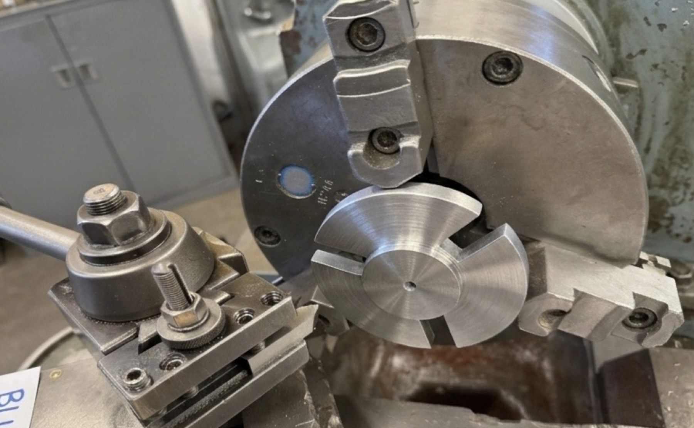
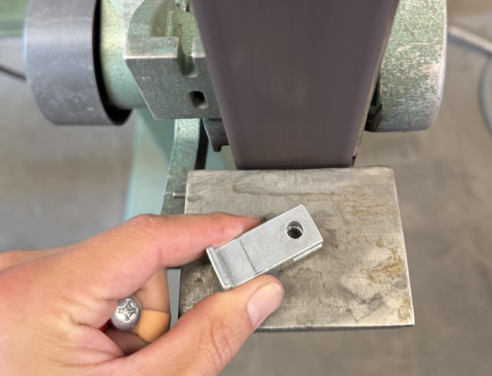
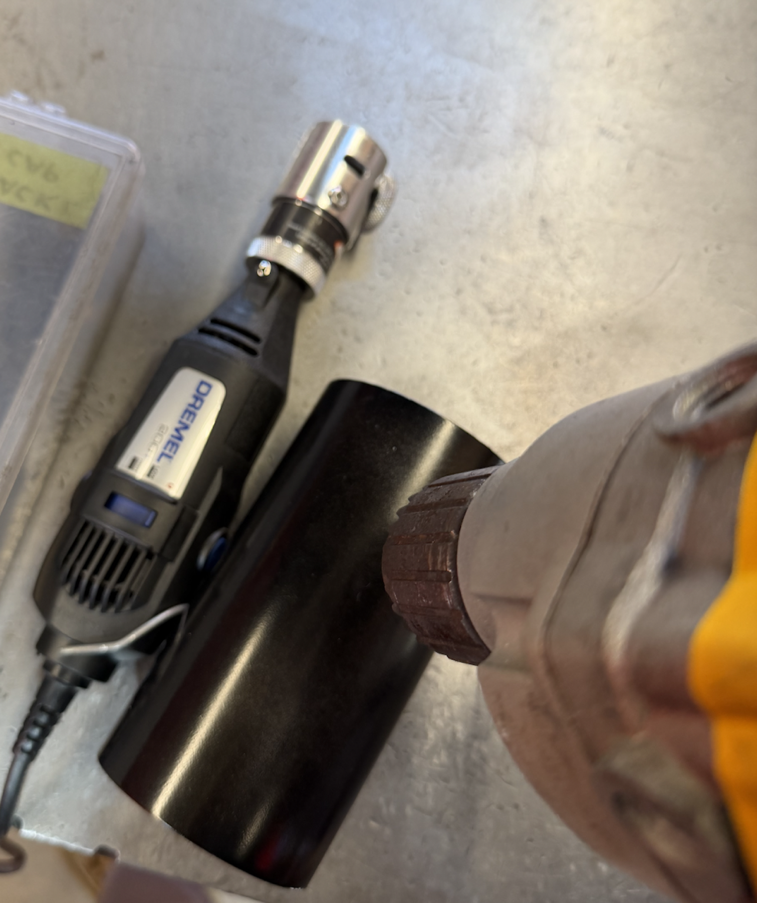

JawDrop
From a napkin sketch to machined 6061 aluminum — the story of a cup holder that finally fits.



I drink a lot of Red Bulls and carry a large water bottle everywhere I go — and I've spent way too much time fumbling with drinks that don't fit my car's cup holders. Slim cans rattle; wide bottles are simply homeless on the passenger seat. A small annoyance, but one that happens every single day.
JawDrop expands what the existing cup holder can do: three jaws, spaced 120° apart, grip anything cylindrical — no tools, no modifications. Every part was designed and machined by hand over one quarter in Stanford's Product Realization Lab.
Sketch
The class started with ten product concepts — a foot-operated door prop, a rotating shoe rack, a shirt-folding tool — each born from a real moment of friction. The one that stuck was the cup holder extender: an adjustable-radius adapter that lets a cup of any size sit snugly in a traditional holder.


CAD
Turning the idea into something buildable was the real intellectual work: how a 4-inch plate accommodates a 3-inch cup holder, how three jaws spaced 120° apart grip different diameters, how a boss-and-recess joint between the two plates creates a stable connection. Every dimension had a reason — nothing could be approximate.


Machining
Every machine had a reason. The lathe for the base — rotationally symmetric, parted and faced from 6061 round stock. The mill and rotary table for the plate — three slots indexed 120° apart with a ½-inch end mill, the hardest operation of the build. The waterjet for the jaws — six flat, complex profiles cut from a single sheet at once. And the L-brackets: aluminum bar bent by hand in a bench vise, the most humble part and the most satisfying.



In the car
Red and gold powder coat, assembled, and dropped into the center console. Presented at Meet the Makers, March 2026. Sitting in my car now, it's there. It works. I made it — and that feeling is different from anything a problem set can produce.